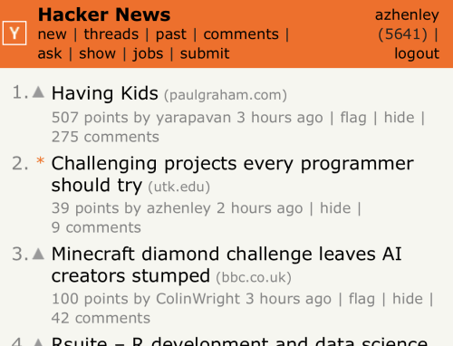
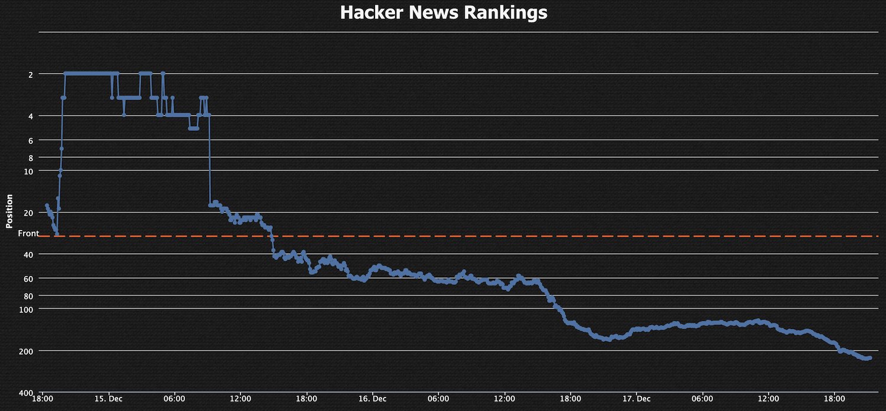
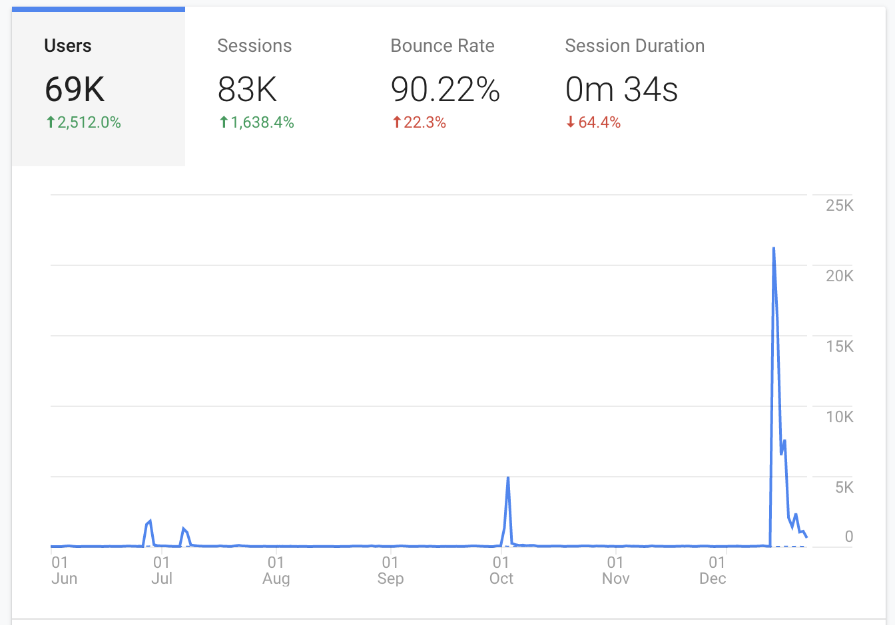
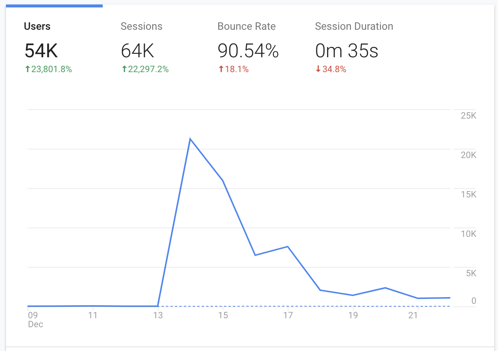
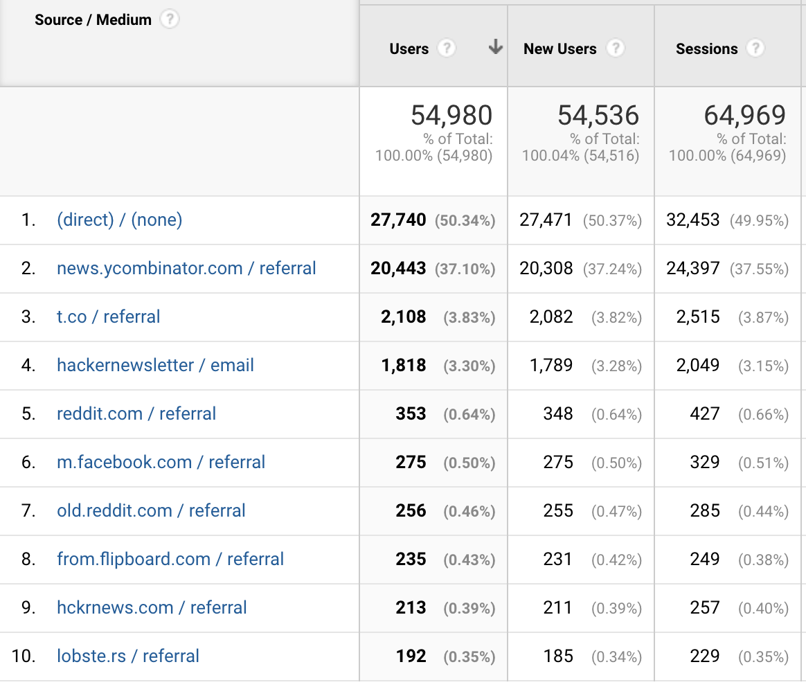
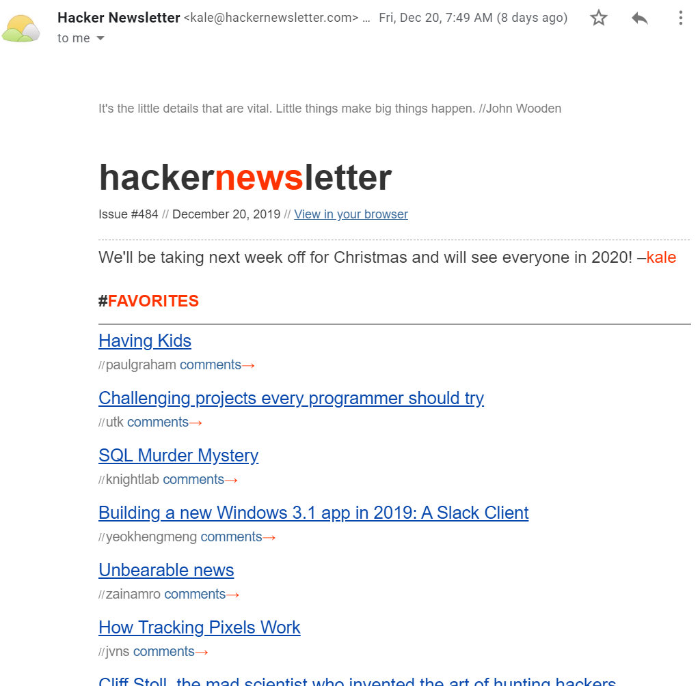
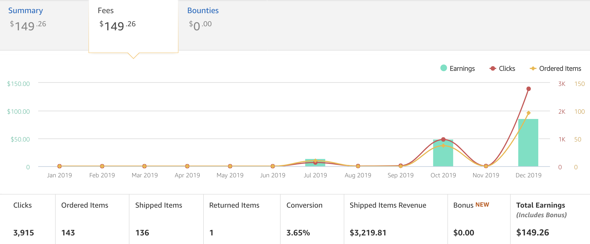

I work on software.
My post, Challenging projects every programmer should try, went viral recently. Maybe viral is a bit strong, but my entire website was averaging 10 views a day and then this post got over 65,000 views. Even though I've had 11 posts land on the front page of Hacker News, none of them have received anywhere near this much attention. So, I thought I'd share some analytics about the traffic and revenue.
Summary stats:
Let's dive in.
The first time I submitted this blog post to HN, it only got 4 votes and never made it to the front page. Later that week, I resubmitted it and it took off. It is very common for things to get lost on the first submission. The time of day seems to play a big factor. I also posted it on /r/programming.
It sat at #2 on HN for quite some time (Paul Graham's latest blog post was #1 all day) and #2 on Reddit (Tony Brooker's death was #1). It is very unusual for something to get as many votes as this got without hitting the top spot, but I'll let Paul Graham have it this time. I gained about 450 karma on HN and received my first Reddit Gold.
So how much of a traffic boost did this give me exactly?
Looking at this Google Analytics screenshot showing June to December, you can see 4 spikes in traffic to my website. These all correspond to my blog posts making it to the front page of HN. Usually after 2 days, the traffic goes back to essentially zero.
Zooming into the last two weeks, you'll see that traffic fell off quickly but still far higher than normal. So I had 4 days of solid traffic. Nice!
A lot of traffic came from HN, but I was surprised by how little traffic came from Reddit. Who knows how much of it is being categorized as "direct" though. I also tried counting how many different people tweeted about it, but it became tedious due to all the link shorteners.
Another surprise was the amount of traffic from Hacker Newsletter. There is my post in the #2 spot in an email that was blasted out to thousands!
What I was most eager to see was the impact on my Amazon affiliate links. Over the summer I decided to try including Amazon links in my blog posts since I often reference books. It turns out that people actually click them.
Again, the spikes correspond to my blog posts getting to the front page of Hacker News. The posts from July and October had a good ratio of Amazon orders to page views. However, this latest blog post had 10x the views with only 2x the orders. My sample size is only a few posts though. Of course, the amount of money I am generating from this blog isn't ever going to replace my day job, but I find it really cool to make even $1 from a personal project!
Interestingly, the best selling items from my blog are referenced near the end of my posts. They are:
Let me know if you'd like more data!